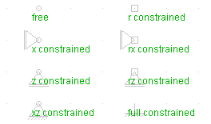

,
or the corresponding entries in the node menu you can insert new
nodes.
You may already specify the support conditions:
,
or the corresponding entries in the node menu you can insert new
nodes.
You may already specify the support conditions:
| previous | Contents | next |
Using ,
or the corresponding entries in the node menu you can insert new
nodes.
You may already specify the support conditions:
| r | restrict rotation |
| x | restrict horizontal displacement |
| z | restrict vertical displacement |
Or you may change the support conditions after inserting an element using the properties dialogue. You can also set the coordinates (X, Z), nodal forces (Force X, Force Z, Moment) as well as the label.
Using a label you name an object in the drawing area. Only labeled object will appear in the exported result files.
Nodes only connected to truss elements must have restricted rotation, because otherwise the system becomes kinematic.
Node symbols:

| previous | Contents | next |